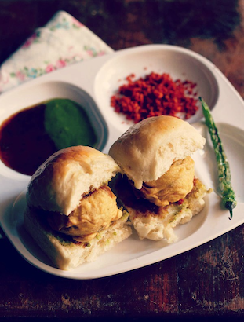

Vada Pav Recipe

Description
A popular Indian street food recipe prepared mainly with pav bread and deep fried batata vada stuffing.
Most commonly, this snack is also referred as Indian burger or aka Bombay burger because it hails from Maharashtra or marathi cuisine.
Generally, it is served as an evening snack, but can also be adapted to breakfast.
Ingredients
For aloo mixture
- 2 tsp oil
- ½ tsp mustard
- pinch of hing / asafoetida
- few curry leaves
- 1 inch ginger (crushed)
- 2 clove garlic (crushed)
- 1 chilli (finely chopped)
- 2 tbsp coriander (finely chopped)
- ¼ tsp turmeric / haldi
- 2 potato / aloo (boiled & mashed)
- ½ tsp salt
- 1 tbsp lemon juice
For besan batter
- ¾ cup besan / gram flour
- 1 tbsp rice flour
- ¼ tsp turmeric / haldi
- ¼ tsp kashmiri red chilli powder / lal mirch powder
- pinch of hing / asafoetida
- ¼ tsp salt
- ¼ tsp baking soda
- ½ cup water
- oil for deep frying
Other ingredients
- 6 ladi pav / dinner rolls
- 7 green chilli
- 6 tsp green chutney
- 3 tsp tamarind chutney
- 3 tsp dry garlic chutney
Step by step instructions
- Firstly, in a large kadai heat 2 tsp oil and splutter ½ tsp mustard, a pinch of hing and few curry leaves
- Add 1-inch ginger, 2 clove garlic, 1 chilli, 2 tbsp coriander and saute well
- Further, add ¼ tsp turmeric and saute for 30 seconds
- Additionally, add 2 boiled and mashed potato and ½ tsp salt
- Mix well making sure all the spices are combined well with potato
- Turn off the flame and add 1 tbsp lemon juice
- Mix well and aloo mixture is ready. keep aside
- Prepare besan batter by taking ¾ cup besan, 1 tbsp rice flour, ¼ tsp turmeric, ¼ tsp chilli powder, a pinch of hing, ¼ tsp salt and ¼ tsp baking soda
- Add ½ cup water or as required and prepare smooth lump free batter
- Now make ball sized aloo mixture. I like my vada to be round rather than flat, flatten the balls slightly if you prefer
- Dip in prepared besan batter and coat well
- Deep fry in hot oil stirring occasionally
- Fry on medium flame till the vada turns golden and crisp
- Drain the vada on a kitchen paper to absorb excess oil. keep aside
- Now fry the green chilli, by turning off the flame – be careful as the oil splutter
- Stir occasionally, till the blisters appear on chilli
- Drain the fried chilli on a kitchen paper to absorb excess oil. keep aside
- Now with leftover besan batter prepare chura by pouring watery besan batter in hot oil. add 2 tbsp of water to besan batter to make watery besan batter
- Fry on medium flame till the chura turns golden and crisp
- Drain the chura on a kitchen paper to absorb excess oil. keep aside
Assembling the vada pav recipe
- Now slit the ladi pav centre halfway without cutting fully
- Spread 1 tsp green chutney, ½ tsp tamarind chutney and ½ tsp dry garlic chutney on one side of inside pav
- Place the prepared vada in center of pav
- Also stuff few prepared chura and place a fried chilli on top of vada
- Finally, press the vada pav and serve immediately